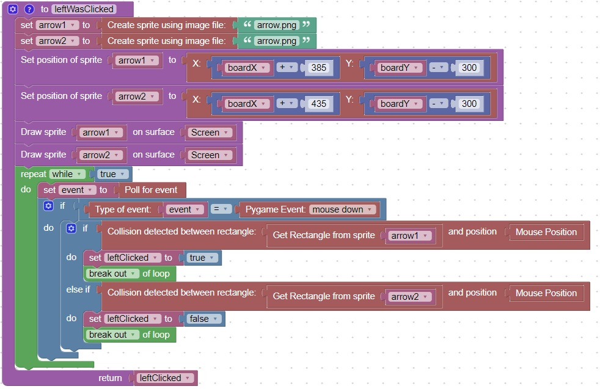

Function to wait for user input
Sometimes we need to wait for the user to make a choice or enter a value
A function is a good way to implementn this type of behaviour
This function will wait for the user to click on one the sprites that are displayed on the board
